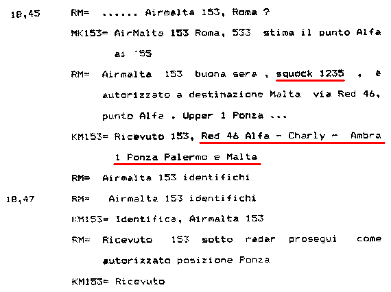
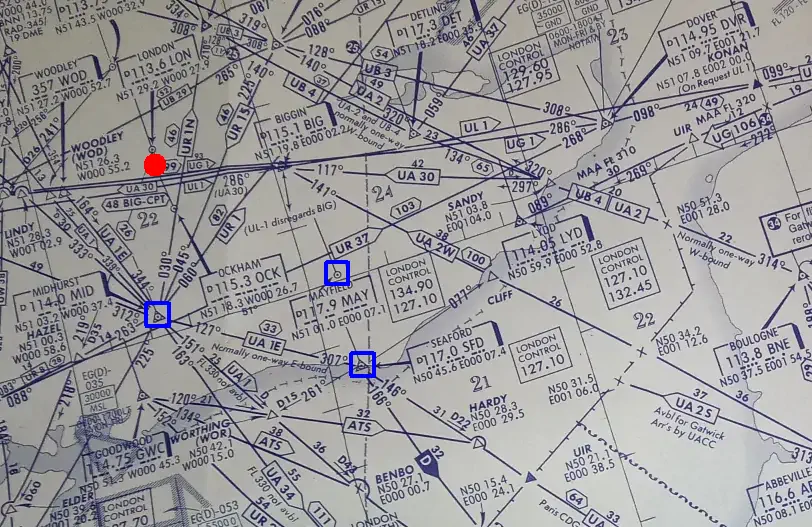
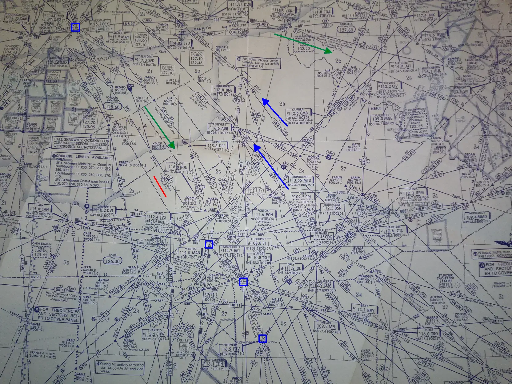
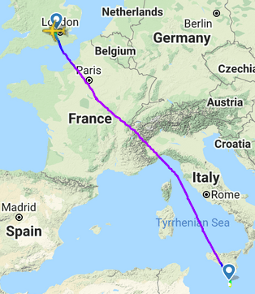

Il MiG-23 aspettava l'Air Malta KM153
Luogo comune: il MiG-23 aspettava il volo Air Malta KM153, non l'Itavia IH870.
Motivazione: il KM153 sarebbe stato l'aereo predestinato per essere abbattuto o per essere usato dal MiG-23 per nascondersi e tornare in Libia indisturbato.
Anche questo luogo comune prende di mira il povero Air Malta KM153 (Londra - Malta), come l'altro in cui viene affermato che l'abbattimento del DC-9 avviene di notte per giustificare la confusione che il pilota militare avrebbe fatto nello scambiare un piccolo bireattore con un quadrigetto che volava 12000 ft più in alto. In questo caso, però, non ci sarebbe stato nessun errore; il pilota del MiG, non vedendo il KM153, si sarebbe semplicemente accodato al primo aereo che passava andando verso sud (l'IH870).
La totale infondatezza di questa fantasiosa fandonia è semplicemente dimostrabile osservando il tracciato radar del KM153.
Il KM153 aveva il transponder impostato sul codice 0323 mentre si trovava nella FIR di Marsiglia, per poi cambiarlo, su richiesta del controllore (come da normale prassi) in 1235 una volta entrato nella FIR di Roma (v. "WP000299_001.DOC" fonte a pag. 5 e
"TITOLO 2 - L'istruttoria dal 27 luglio 90 al 31 dicembre 97" a pag. 184).
La cartina mostra la rotta dell'IH870 (rosso) e del KM153 (blu).
La scala è rappresentata dalle crocette 10 x 10 nm (miglia nautiche) disegnate ogni 0,5° in longitudine e in latitudine. I dischetti di vari colori rappresentano le
radioassistenze e i punti di riporto.
L'etichetta informativa che compare posizionando il puntatore del mouse sopra ai plot mostra: orario UTC (o zulu), codice impostato nel transponder, l'estrattore (usato solo l'estrattore 3 del radar Marconi),
livello di volo, radar che ha ricevuto il plot (SSR: radar secondario, PR: radar primario, SPI: l'aereo si sta identificando su richiesta del controllore), latitudine e longitudine.
Il KM153 stava scendendo verso sud sorvolando la Francia e la traccia radar lo inizia a mostrare al livello di volo 370 lungo l'aerovia UR-46 Nizza - Bastia (rinominata, a fine anni '80, in UR-160).
In base a ciò che si può osservare, non è nemmeno lontanamente ipotizzabile che il MiG stesse aspettando il KM153 in zona Bologna - Firenze, perché l'Air Malta sarebbe transitato a circa 190 km da quella zona. Chi pianifica una missione del genere è certamente a conoscenza della rotta seguita dai vari aerei e di come è strutturato lo spazio aereo con le sue aerovie.

Le comunicazioni
T/B/T (v. "
Note introduttive" → "Principali fonti d'informazione") tra il KM153 e Roma Radar confermano il codice transponder 1235 (di modo A) e la rotta seguita: UR-46A, UR-46C, UA-1, Ponza, Palermo e Malta.
Leggiamo anche la richiesta d'identificazione da parte del controllore, prontamente soddisfatta dal primo ufficiale del KM153 premendo il pulsante "IDENT" nel pannello del transponder, come facilmente verificabile muovendo il puntatore del mouse sui plot blu nella precedente cartina (presenza dell'impulso SPI per una trentina di secondi dalle 18:47).
Questa vecchia cartina mostra proprio le aerovie usate dal KM153 (l'immagine può essere ingrandita cliccandoci sopra).
Si nota l'avvenuto cambio dei nomi dei punti di riporto; non esistono più, infatti, i punti UR-46A e UR-46C, quasi certamente sostituiti dal GILET e dal MEDAL.
Si nota anche la rarissima presenza (forse più unica che rara) di un punto di riporto che manteneva ancora la vecchia nomenclatura (UR-46D lungo il confine delle FIR Roma/Marsiglia) dopo vari anni dall'introduzione delle nuove regole ICAO per l'assegnazione dei nomi ai punti di riporto (nomi bisillabi composti da cinque lettere).
Tra le varie bufale riguardanti il KM153 c'è anche quella relativa alla distanza temporale tra questo aereo e l'IH870. Alcuni creativi parlano di 5/6 minuti, altri di meno di 10 minuti e così via.
L'esatta distanza temporale tra i due voli la si legge dai tabulati radar di Ciampino, senza bisogno d'inventarsi niente. Alle 19:11:00 il KM153 si trova alla stessa latitudine del punto in cui il DC-9 si trovava alle 18:59:45 (ultima risposta del transponder), cioè dopo 11
m25
s.
Quanto detto oggettiva ampiamente l'infondatezza di questo luogo comune, ma si può andare avanti considerando ulteriori elementi noti a chiunque decida di pianificare una missione così delicata.
Le considerazioni che seguono si basano su elementi concreti (come d'abitudine in questo sito) in merito all'economia del volo e alle aerovie effettivamente disponibili all'epoca dei fatti.
È ovvio per chiunque che le compagnie aeree sono interessate a collegare due aeroporti sostenendo il minor costo possibile, a parità del livello di comfort e sicurezza.
L'attenzione all'economia del volo non implica necessariamente la scelta della rotta più breve, perché in presenza di vento sfavorevole potrebbe essere conveniente allungare il percorso passando dove il vento è meno sfavorevole.
Idealmente, ogni compagnia aerea vorrebbe volare seguendo la rotta che minimizza la lunghezza del percorso espressa in nautical air mile o NAM (che si potrebbe tradurre in "miglia nautiche in aria"). Il NAM, diversamente dal consueto miglio nautico, tiene conto del vento incontrato dall'aereo lungo il percorso. Se il vento è contrario, i NAM aumentano (è come se l'aereo percorresse più strada e, quindi, consuma più carburante), se il vento è favorevole, i NAM diminuiscono. In totale assenza di vento 1 NAM è esattamente uguale a 1 nm.
La lunghezza del tragitto e il vento contrario non sono l'unica causa di costi aggiuntivi. Infatti, la scarsa copertura radar dell'epoca rendeva probabile l'attesa in aerovia prima di entrare in una FIR o in una zona "affollata" (tipicamente una TMA), con ulteriore spreco di carburante e perdite di tempo.
Inoltre, per far transitare i propri aerei all'interno delle aerovie, le compagnie devono effettuare i pagamenti agli enti che assicurano il controllo del traffico (oggi è EUROCONTROL per l'Europa, all'epoca dei fatti erano i singoli stati). I costi possono variare da stato a stato e da aerovia ad aerovia (i costi possono variare anche per disincentivare il transito in aerovie troppo affollate).
Tutti questi elementi venivano tenuti in grande considerazione dal Flight dispatcher in sede di pianificazione. È, quindi, evidente che in alcuni casi la rotta pianificata può apparire "strana" ad un occhio profano.
La cartina mostra la rotta ideale (la più breve) e la parte di rotta pianificata della quale si ha certezza (la rotta più breve non appare esattamente come una retta perché la proiezione geografica usata dalla cartina distorce leggermente quella che viene chiamata
ortodromia).
La rotta ideale passa nelle vicinanze di Nizza e Bastia ed è, quindi, molto vicina a quella realmente seguita. Poi, da Bastia a Palermo non esisteva alcuna aerovia, per cui il KM153 poteva solo passare per il breve tratto dell'UA-1 e Ponza, dove in effetti è passato.
La rotta ideale era anche favorevole dal punto di vista del vento. Infatti, le cartine meteo di quel giorno mostrano un discreto vento (più di 50 kn) da nord-ovest sopra alla Francia, quindi quasi esattamente a favore del KM153.
Appurata la convenienza economica nel seguire una rotta molto prossima a quella ideale, passiamo alla verifica delle aerovie che avrebbero potuto essere usate in alternativa a quelle effettivamente usate.

La partenza strumentale da Heathrow (dischetto rosso) prevedeva (e prevede ancora oggi) l'ingresso in aerovia in corrispondenza delle radioassistenze di Midhurst, Mayfield o Seaford.
La possibilità di usare varie partenze non era bilanciata dalla possibilità di scegliere varie aerovie, come mostrato dalla seguente carta aeronautica (si notino i vari circuiti d'attesa a forma di biscotto nominati in precedenza, ad esempio, su BNE e ABB, vicino alle due frecce blu, ma ce ne sono molti altri):

La struttura dello spazio aereo era tale per cui i voli verso sud dovevano utilizzare le aerovie situate nella parte ovest dello spazio aereo francese, mentre i voli verso nord utilizzavano le aerovie ad est; si notano le frecce con il nome dell'aerovia che indicano il senso unico proprio come per le strade.
La freccia verde più in alto evidenzia che se non si volevano utilizzare le aerovie che sorvolavano l'area di Parigi, erano disponibili soltanto aerovie che obbligavano a volare estremamente ad oriente, assolutamente inutilizzabili per un volo Londra - Malta.
Quindi il percorso era quasi obbligato. I quadratini blu (aggiunti) evidenziano il possibile percorso seguito dal KM153 nella prima parte del volo.
Come sottolineato varie volte, le cartine non sono proprio del 1980, ma di alcuni anni dopo, per cui nel 1980 c'erano meno aerovie (e meno scelta) rispetto a quelle mostrate nella cartina.
Il volo è poi proseguito verso sud, arrivando a sorvolare Nizza e procedere come riportato nei tabulati radar.

Un esempio dei giorni nostri (12 maggio 2021) è mostrato da quest'immagine tratta da
flightradar24, in cui un Airbus A320 del volo KM101 va da Heathrow a Luqa passando molto vicino alla rotta percorsa circa quarant'anni prima dal KM153.
Nonostante oggi ci sia molta più scelta rispetto al 1980, è ancora evidente la necessità di sorvolare Parigi. Poi, le innumerevoli aerovie create in tutti questi anni rendono possibile "tagliare" più a est, ma comunque, ancora oggi, siamo ben distanti dalla zona Bologna - Firenze.
Conclusione
Non può esserci alcun dubbio che l'Air Malta KM153 non aveva niente a che fare con il MiG-23, perché sarebbe passato a circa 190 km dal presunto punto d'attesa, che la leggenda vuole collocato nella zona Bologna - Firenze, circostanza certamente ben nota a chi ha pianificato una missione del genere e a chi ha una conoscenza di base d'aviazione e d'organizzazione dello spazio aereo.